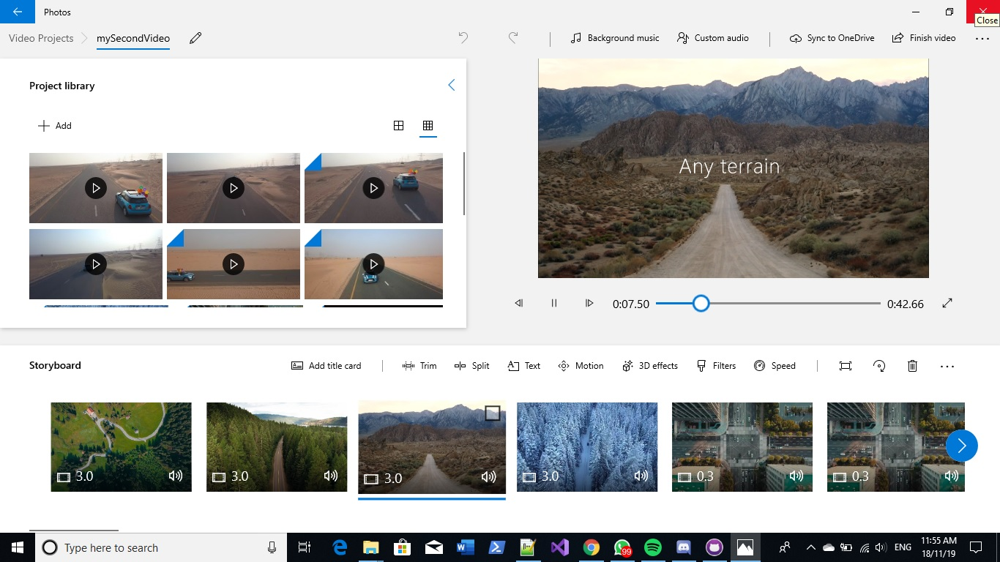

I made a makeshift Mini Cooper commercial, because why not?
After all, I did unintentionally stumble upon 5-6 videos of
the same MINI on Pexels just conveniently laid out side-by-side.
Why put such a great opportunity to waste? I also tried to be
as minimalistic with the design as possible, by selecting a
font that was - to me, at least - simple, yet sophisticated
enough to look professional.
The music was also randomly selected because I thought its
upbeat nature fit the overall setting of the video. How it
somehow manages to sync with the video in certain parts is
beyond me. But hey, you know what they say: never look a gift
horse in the mouth, so I shan't. I will say, however, that I'm
still amused over it all.

Sources: